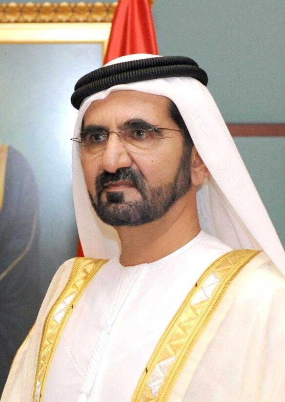

Mohammed ben Rachid Al Maktoum est né le 15 juillet 1949 à Dubaï. Il est le fils de l’ancien dirigeant Rachid ben Saeed Al Maktoum. Il occupe le poste d’émir de Dubaï ainsi que celui de vice-président et premier ministre des Émirats arabes unis depuis 2006. Sa fortune personnel est évalué à environ 16 milions de dollars.

CONVICTION PERSONNELLES
Le visionnaire des Émirats
Pour Mohammed ben Rachid a réussite repose sur trois piliers :
la connaissance
l’innovation
la volonté
Sa devise :
« Dans la course vers l’excellence, il n’y a pas de ligne d’arrivée. »
Il prône une gouvernance transparente, basée sur la compétence et l’efficacité tout en restant profondément attaché à la culture arabe et à l’identité musulmane.
PROJETS ET INITIATIVES
Le visionnaire des Émirats
Il a joué un rôle clé dans le lancement de Emirats AirLines et à inauguré le Burj khalifa le 4 janvier 2010. Il est aussi à l'initiative de The World et Palm Jumeirah des Archipels d'îles artificielles à Dubaï.
Il a fondé plusieurs initiatives en faveur de l’éducation, de la culture et de la connaissance. Parmi elles figure la Mohammed bin Rashid Al Maktoum Knowledge Foundation, destinée à promouvoir la recherche, l’innovation et la diffusion du savoir dans le monde arabe.
Sous son impulsion, le Mohammed bin Rashid Space Centre voit le jour et envoie en 2021 la première mission spatiale émiratie vers Mars. Il fonde également le World Government Summit, une rencontre internationale annuelle à Dubaï qui réunit chefs d’État, penseurs et innovateurs pour discuter de la gouvernance du futur.
PRIX ET DISTINCTIONS
Le visionnaire des Émirats
Son leadership et sa vision lui ont valu de nombreuses distinctions :
En 2014, il est nommé Personnalité arabe de l’année pour son rôle dans le développement du monde arabe.
En 2016, il reçoit le Prix du leadership visionnaire du gouvernement de Dubaï.
Plusieurs pays lui ont également attribué des décorations honorifiques pour ses efforts diplomatiques et son engagement en faveur de la coopération internationale.
SPORTS EQUESTRES
Sa passion
Il a fondé les Godolphin Stables, une écurie de renommée internationale basée à Dubaï et au Royaume-Uni qui domine les compétitions de course de chevaux pur-sang.
Lui-même champion, il a remporté de nombreuses courses d’endurance internationales incarnant à la fois la noblesse du sport et l’esprit de persévérance cher à sa culture.
Chaque année, il préside la Dubai World Cup, la course hippique la plus richement dotée au monde, symbole de prestige et d’excellence sportive.